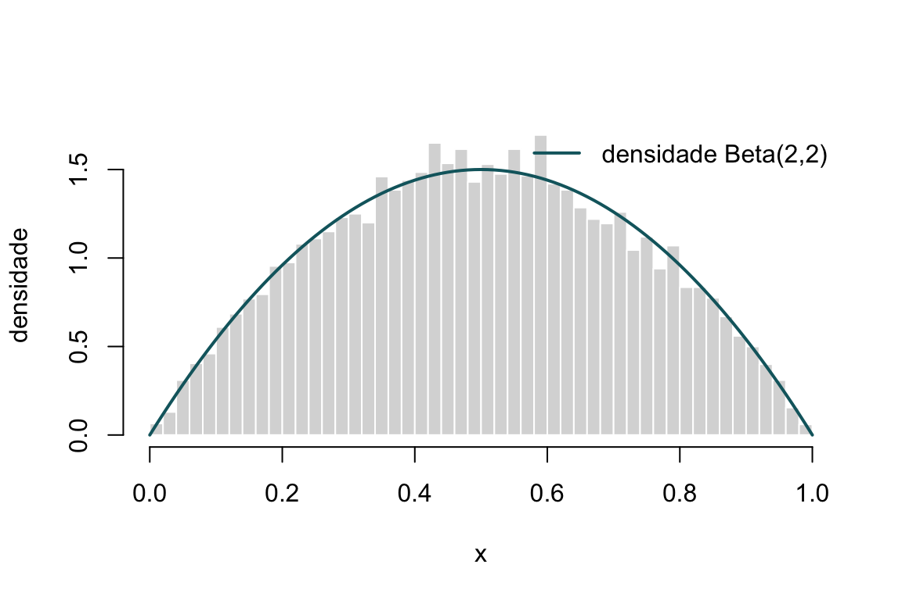
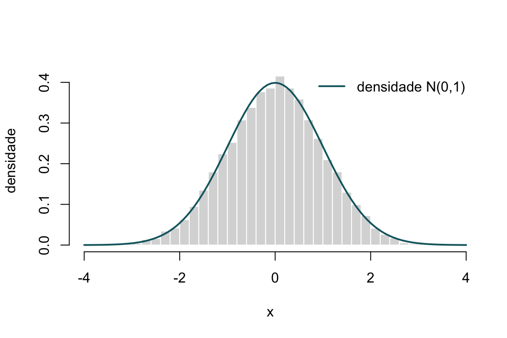

Capítulo 23 Método da aceitação-rejeição
No capítulo anterior vimos que o método da transformação inversa nos permite gerar observações de uma variável aleatória sempre que conhecemos — e sabemos inverter — a sua função de distribuição. Essa é uma condição forte. Para muitas distribuições de grande importância prática, a função de distribuição não tem forma fechada (basta pensar na normal) ou, tendo-a, não é invertível de forma explícita. Precisamos, por isso, de uma segunda ferramenta, mais geral, que funcione mesmo quando só conhecemos a função densidade \(f\) e não a sua primitiva. Essa ferramenta é o método da aceitação-rejeição.
A ideia é engenhosamente simples: se não sabemos amostrar diretamente de \(f\), amostramos de uma distribuição auxiliar que sabemos gerar com facilidade e, em seguida, “filtramos” essas observações, aceitando umas e rejeitando outras, de modo que as sobreviventes se distribuam exatamente segundo \(f\). É como esculpir a distribuição desejada a partir de um bloco de material mais fácil de obter.
23.1 Contexto histórico
O método da aceitação-rejeição deve-se a John von Neumann, que o descreveu em 1951 no artigo Various techniques used in connection with random digits, publicado no âmbito dos primeiros trabalhos sobre o método de Monte Carlo. Von Neumann integrava, juntamente com Stanislaw Ulam e Nicholas Metropolis, o grupo de Los Alamos que, no final da década de 1940, desenvolveu a simulação estocástica como instrumento de cálculo científico — precisamente na altura em que surgiam os primeiros computadores eletrónicos capazes de produzir e manipular grandes quantidades de números pseudoaleatórios.
O que torna o método notável é a sua generalidade e a elegância do argumento que o sustenta. Não exige o conhecimento da função de distribuição, nem sequer que a densidade \(f\) esteja normalizada (mais à frente veremos por que razão isto é útil): basta saber avaliar \(f\) ponto a ponto e dispor de uma distribuição auxiliar cómoda. Mais de setenta anos depois, continua a ser um dos pilares da simulação e o ponto de partida conceptual para técnicas modernas, como os métodos de Monte Carlo por cadeias de Markov (MCMC).
23.2 A ideia geométrica
Antes da formalização, vale a pena fixar a intuição. Suponhamos que queremos gerar pontos sob o gráfico de uma densidade \(f\). Se conseguíssemos distribuir pontos uniformemente na região delimitada pelo eixo das abcissas e pela curva \(y = f(x)\), então a abcissa \(X\) de um ponto escolhido ao acaso nessa região teria exatamente densidade \(f\). Este é o princípio fundamental: gerar uniformidade numa região a duas dimensões e ler a primeira coordenada.
O problema é que raramente sabemos amostrar uniformemente sob uma curva arbitrária. A solução de von Neumann é cobrir essa região com outra, maior e mais simples — a região sob uma curva \(c\,g(x)\), onde \(g\) é uma densidade fácil de simular e \(c\) é uma constante que garante que \(c\,g\) fica sempre acima de \(f\). Amostramos uniformemente sob a curva mais fácil e ficamos apenas com os pontos que caem também sob \(f\). Os restantes são descartados.
Aprender a gerar observações de uma densidade \(f\) da qual não sabemos amostrar diretamente, recorrendo a uma densidade auxiliar \(g\) de fácil simulação, através do critério de aceitação-rejeição de von Neumann. No fim do capítulo, deverá ser capaz de escolher uma proposta \(g\) adequada, determinar a constante \(c\) e implementar o algoritmo em R.
23.3 Formalização do método
Sejam \(f\) a densidade da qual pretendemos amostrar (a densidade alvo) e \(g\) uma densidade auxiliar, dita densidade de proposta ou instrumental, que sabemos simular. A única exigência é que exista uma constante \(c \geq 1\) tal que
\[ f(x) \leq c\,g(x), \qquad \text{para todo o } x \text{ com } f(x) > 0. \]
Equivalentemente, exige-se que o rácio \(f(x)/g(x)\) seja limitado e que
\[ c = \sup_{x \,:\, f(x) > 0} \frac{f(x)}{g(x)} < \infty. \]
Repare-se numa condição implícita mas essencial: o suporte de \(g\) tem de conter o suporte de \(f\). Se existir algum ponto onde \(f(x) > 0\) mas \(g(x) = 0\), o rácio explode e o método não é aplicável — nunca poderíamos gerar observações nessa zona porque a proposta lá não coloca massa.
A desigualdade \(f(x) \leq c\,g(x)\) tem de valer em todo o suporte de \(f\), não apenas na região onde a maioria da massa se concentra. Se escolhermos um \(c\) demasiado pequeno, a envolvente \(c\,g\) deixa de cobrir \(f\) nalgum ponto e as observações produzidas seguem uma distribuição errada, sem que qualquer mensagem de erro nos alerte. É um erro silencioso e, por isso, particularmente perigoso.
23.3.1 O algoritmo
O procedimento de aceitação-rejeição consiste em repetir os seguintes passos:
- Gerar uma observação \(Y\) da densidade de proposta \(g\).
- Gerar \(U \sim \mathcal{U}(0,1)\), independente de \(Y\).
- Se \[ U \leq \frac{f(Y)}{c\,g(Y)}, \] aceitar e devolver \(X = Y\). Caso contrário, rejeitar \(Y\) e voltar ao passo 1.
O quociente \(f(Y)/[c\,g(Y)]\) está sempre entre \(0\) e \(1\), pelo que a comparação com um uniforme faz sentido. Intuitivamente, um valor \(Y\) é aceite com uma probabilidade tanto maior quanto mais “alta” a densidade alvo estiver nesse ponto, relativamente à envolvente. Onde \(f\) e \(c\,g\) quase coincidem, quase todos os \(Y\) são aceites; onde \(f\) é muito menor que \(c\,g\), a maioria é descartada.
23.3.2 Demonstração de que o método é correto
Vejamos por que razão as observações aceites têm efetivamente densidade \(f\). Um valor devolvido pelo algoritmo é um valor de \(Y\) condicionado ao acontecimento “aceitar”. Calculemos primeiro a probabilidade de aceitação num único passo, para um dado \(Y = y\):
\[ P\!\left(U \leq \frac{f(Y)}{c\,g(Y)} \,\Big|\, Y = y\right) = \frac{f(y)}{c\,g(y)} . \]
Integrando sobre a distribuição de \(Y\), a probabilidade incondicional de aceitação em cada passo é
\[ p = P(\text{aceitar}) = \int \frac{f(y)}{c\,g(y)}\, g(y)\, dy = \frac{1}{c}\int f(y)\, dy = \frac{1}{c}. \]
Agora, a função de distribuição do valor devolvido é a de \(Y\) condicionada à aceitação. Para qualquer \(x\),
\[ P(X \leq x) = P\!\left(Y \leq x \,\middle|\, \text{aceitar}\right) = \frac{P(Y \leq x,\ \text{aceitar})}{P(\text{aceitar})}. \]
O numerador é
\[ P(Y \leq x,\ \text{aceitar}) = \int_{-\infty}^{x} \frac{f(y)}{c\,g(y)}\, g(y)\, dy = \frac{1}{c}\int_{-\infty}^{x} f(y)\, dy = \frac{F(x)}{c}, \]
onde \(F\) é a função de distribuição associada a \(f\). Dividindo pelo denominador \(p = 1/c\), obtém-se
\[ P(X \leq x) = \frac{F(x)/c}{1/c} = F(x). \]
Ou seja, o valor aceite tem exatamente a função de distribuição \(F\), logo a densidade \(f\). É este o resultado que legitima o método. \(\qquad\blacksquare\)
23.3.3 Eficiência: o papel da constante \(c\)
A demonstração revelou um facto de enorme importância prática: a probabilidade de aceitar em cada tentativa é \(p = 1/c\). O número \(N\) de tentativas necessárias até obter a primeira aceitação segue, portanto, uma distribuição geométrica de parâmetro \(1/c\), e o seu valor esperado é
\[ E[N] = \frac{1}{p} = c. \]
Por outras palavras, em média são precisas \(c\) tentativas para produzir uma única observação aceite. A constante \(c\) é assim, simultaneamente, o fator de sobre-cobertura geométrico e o custo médio do algoritmo.
Como \(c \geq 1\) sempre (porque \(f\) e \(g\) são densidades e integram \(1\)), o melhor cenário possível é \(c = 1\), que só ocorre quando \(f = g\). Na prática, quanto mais a proposta \(g\) se “assemelhar” à alvo \(f\), menor será \(c\) e mais eficiente o método. A arte de aplicar a aceitação-rejeição está, em boa medida, na escolha de uma boa proposta.
Este é o principal critério para comparar propostas: entre duas densidades auxiliares admissíveis, prefere-se a que conduz ao menor \(c\). Uma proposta cómoda de simular mas que force um \(c\) muito grande pode ser, no cômputo geral, pior do que uma proposta um pouco mais trabalhosa mas com \(c\) próximo de \(1\).
23.4 Implementação genérica em R
Comecemos por traduzir o algoritmo numa função reutilizável. A função recebe o
número de observações desejadas, a densidade alvo f, uma função g_amostra
que gera observações da proposta, a densidade da proposta g_dens e a constante
c. Para além da amostra, devolve a taxa de aceitação observada, que nos
permite verificar empiricamente se ela se aproxima de \(1/c\).
aceita_rejeita <- function(n, f, g_amostra, g_dens, c) {
amostra <- numeric(n)
aceites <- 0
tentativas <- 0
while (aceites < n) {
y <- g_amostra(1) # observação da proposta
u <- runif(1) # uniforme para o teste
tentativas <- tentativas + 1
if (u <= f(y) / (c * g_dens(y))) {
aceites <- aceites + 1
amostra[aceites] <- y
}
}
list(amostra = amostra,
taxa_aceitacao = aceites / tentativas)
}A versão acima gera uma observação de cada vez, o que é claro do ponto de vista didático mas relativamente lento em R, uma linguagem em que os ciclos explícitos têm um custo apreciável. Numa aplicação em que a eficiência importe, é preferível vetorizar: gerar um grande lote de candidatos e respetivos uniformes de uma só vez, aceitar em bloco os que passam no teste, e repetir apenas se ainda faltarem observações. A lógica é idêntica; muda só a forma de a executar.
23.5 Exemplo 1 — uma densidade limitada com proposta uniforme
Consideremos a densidade da distribuição \(\text{Beta}(2,2)\), dada por
\[ f(x) = 6\,x\,(1-x), \qquad 0 < x < 1, \]
e nula fora de \((0,1)\). Esta densidade tem suporte limitado, pelo que uma escolha natural para a proposta é a uniforme em \((0,1)\), ou seja, \(g(x) = 1\) nesse intervalo. Como \(g\) é constante, determinar \(c\) reduz-se a encontrar o máximo de \(f\):
\[ c = \sup_{0<x<1} \frac{f(x)}{g(x)} = \max_{0<x<1} 6\,x\,(1-x). \]
Derivando e igualando a zero, o máximo ocorre em \(x = 1/2\), onde \(f(1/2) = 6 \cdot \tfrac{1}{2} \cdot \tfrac{1}{2} = \tfrac{3}{2}\). Logo \(c = 1{,}5\), e esperamos uma taxa de aceitação de \(1/c \approx 0{,}667\).
set.seed(2024)
f_beta <- function(x) ifelse(x > 0 & x < 1, 6 * x * (1 - x), 0)
g_unif <- function(x) ifelse(x > 0 & x < 1, 1, 0)
resultado <- aceita_rejeita(
n = 10000,
f = f_beta,
g_amostra = function(n) runif(n),
g_dens = g_unif,
c = 1.5
)
resultado$taxa_aceitacao # deverá rondar 0.667
## [1] 0.6674A taxa de aceitação observada está muito próxima do valor teórico \(1/1{,}5\), o que confirma o funcionamento do algoritmo. Comparemos agora o histograma das observações geradas com a densidade teórica.
hist(resultado$amostra, breaks = 40, probability = TRUE,
col = "grey85", border = "white",
main = "", xlab = "x", ylab = "densidade")
curve(f_beta, from = 0, to = 1, add = TRUE, lwd = 2, col = "#10656d")
legend("topright", legend = "densidade Beta(2,2)",
lwd = 2, col = "#10656d", bty = "n")
Figura 23.1: Histograma de 10,000 observações geradas pelo método da aceitação-rejeição, sobreposto à densidade teórica da Beta(2,2).
O acordo entre o histograma e a curva teórica é excelente. Repare-se ainda que,
tendo já implementado o método, poderíamos ter obtido a mesma amostra com
rbeta(10000, 2, 2); o exercício serve para validar a nossa implementação
contra uma referência de confiança, uma boa prática sempre que se programa um
gerador de raiz.
23.6 Exemplo 2 — a normal padrão a partir da exponencial
O exemplo anterior era confortável porque a densidade alvo tinha suporte limitado. Vejamos agora um caso com suporte ilimitado e uma proposta menos óbvia, que ilustra bem a subtileza do método: gerar observações da normal padrão \(N(0,1)\).
A estratégia clássica passa por gerar primeiro o valor absoluto de uma normal padrão — que segue a chamada distribuição meia-normal, com densidade
\[ f(x) = \sqrt{\frac{2}{\pi}}\; e^{-x^2/2}, \qquad x \geq 0, \]
e, no fim, atribuir-lhe um sinal aleatório, positivo ou negativo com igual probabilidade. Como proposta para a meia-normal usamos a exponencial de parâmetro \(1\), \(g(x) = e^{-x}\) para \(x \geq 0\), que sabemos simular facilmente pela transformação inversa.
Determinemos \(c\). O rácio das densidades é
\[ \frac{f(x)}{g(x)} = \sqrt{\frac{2}{\pi}}\; e^{-x^2/2 + x} = \sqrt{\frac{2}{\pi}}\; e^{\,1/2}\, e^{-(x-1)^2/2}, \]
onde completámos o quadrado no expoente. O fator \(e^{-(x-1)^2/2}\) é máximo em \(x = 1\), onde vale \(1\). Portanto
\[ c = \sqrt{\frac{2}{\pi}}\; e^{\,1/2} = \sqrt{\frac{2e}{\pi}} \approx 1{,}3155. \]
A taxa de aceitação esperada é \(1/c \approx 0{,}760\) — bastante boa. E a condição de aceitação simplifica-se de forma elegante:
\[ U \leq \frac{f(Y)}{c\,g(Y)} = e^{-(Y-1)^2/2}. \]
set.seed(2024)
c_norm <- sqrt(2 * exp(1) / pi)
c_norm
## [1] 1.315
gerar_normal_ar <- function(n) {
x <- numeric(n)
aceites <- 0
tentativas <- 0
while (aceites < n) {
y <- rexp(1, rate = 1) # proposta: Exp(1)
u <- runif(1)
tentativas <- tentativas + 1
if (u <= exp(-(y - 1)^2 / 2)) { # teste simplificado
aceites <- aceites + 1
s <- sample(c(-1, 1), 1) # sinal aleatório
x[aceites] <- s * y
}
}
list(amostra = x, taxa_aceitacao = aceites / tentativas)
}
normais <- gerar_normal_ar(10000)
normais$taxa_aceitacao # deverá rondar 0.760
## [1] 0.7596
hist(normais$amostra, breaks = 50, probability = TRUE,
col = "grey85", border = "white",
main = "", xlab = "x", ylab = "densidade")
curve(dnorm(x), from = -4, to = 4, add = TRUE, lwd = 2, col = "#10656d")
legend("topright", legend = "densidade N(0,1)",
lwd = 2, col = "#10656d", bty = "n")
Figura 23.2: Observações da normal padrão geradas por aceitação-rejeição a partir de uma proposta exponencial, com a densidade N(0,1) sobreposta.
Uma verificação numérica adicional: a média e o desvio-padrão amostrais devem aproximar-se de \(0\) e \(1\), respetivamente.
c(media = mean(normais$amostra), desvio = sd(normais$amostra))
## media desvio
## -0.0002611 1.0000975Este exemplo tem valor histórico: variantes deste esquema — combinando a
exponencial como proposta com transformações inteligentes — estiveram na base
dos primeiros geradores eficientes de números normais. Hoje o R usa por defeito
o método da inversão (rnorm), mais rápido, mas o argumento da
aceitação-rejeição permanece o mais transparente para compreender porque é que
tais geradores funcionam.
23.7 O caso de densidades não normalizadas
Uma virtude do método, que merece destaque, é a seguinte: para aplicar a aceitação-rejeição não precisamos de conhecer a constante de normalização de \(f\). Suponhamos que só sabemos que a densidade alvo é proporcional a uma função conhecida \(\tilde f\), isto é, \(f(x) = \tilde f(x)/Z\), com \(Z = \int \tilde f\) possivelmente desconhecido ou difícil de calcular. Se encontrarmos \(\tilde c\) tal que \(\tilde f(x) \leq \tilde c\, g(x)\), o critério de aceitação \(U \leq \tilde f(Y)/[\tilde c\, g(Y)]\) produz observações de \(f\) na mesma, porque a constante \(Z\) se cancela no quociente. Esta propriedade é decisiva na estatística bayesiana, onde as distribuições a posteriori são frequentemente conhecidas apenas a menos de uma constante.
23.8 Síntese
O método da aceitação-rejeição alarga consideravelmente o alcance da simulação: permite gerar observações de praticamente qualquer densidade, exigindo apenas que a saibamos avaliar ponto a ponto e que disponhamos de uma proposta cómoda que a domine, a menos de uma constante \(c\). O preço a pagar é o descarte de parte das observações — em média, \(c\) tentativas por cada aceite — o que transforma a escolha da proposta no ponto crítico de toda a aplicação: uma boa proposta é a que fica “colada” à densidade alvo, mantendo \(c\) próximo de \(1\).
23.9 Exercícios
Nos exercícios seguintes, implemente o método da aceitação-rejeição, escolha uma constante \(c\) adequada (justificando-a) e valide sempre o resultado comparando o histograma das observações geradas com a densidade teórica. Reporte também a taxa de aceitação e confronte-a com o valor esperado \(1/c\).
1. Gere variáveis aleatórias com distribuição exponencial \(\text{Exp}(\lambda = 1)\) usando o método da aceitação-rejeição. Use uma função de proposta uniforme no intervalo \([0, 5]\) e visualize o histograma das observações geradas. Comente o efeito de truncar o suporte da exponencial em \(5\).
2. Gere variáveis aleatórias com distribuição normal \(N(0,1)\) usando uma distribuição de proposta Cauchy padrão \(C(0,1)\). Gere \(1000\) observações e compare-as com a densidade da normal padrão. Determine analiticamente a constante \(c\).
3. Use o método da aceitação-rejeição para gerar observações de uma variável \(\text{Beta}(2, 3)\), recorrendo a uma proposta uniforme \(\mathcal{U}(0, 1)\). Calcule o valor exato de \(c\) localizando o máximo da densidade.
4. Use o método da aceitação-rejeição para gerar variáveis aleatórias \(X \sim \Gamma(3, 2)\) (forma \(3\), taxa \(2\)) usando uma proposta exponencial \(\text{Exp}(2)\). Explique por que razão a proposta deve ter média maior ou igual à da distribuição alvo para que \(c\) seja finito.
5. Use o método da aceitação-rejeição para gerar variáveis log-normais \(X \sim \text{LogNormal}(0, 1)\) usando uma proposta normal \(N(0, 1)\). Discuta as dificuldades que surgem por a log-normal ter cauda mais pesada do que a normal.
6. Use o método da aceitação-rejeição para gerar variáveis de Weibull
\(W(\text{forma}=2, \text{escala}=1)\) usando uma proposta exponencial. Determine
\(c\) numericamente maximizando o rácio das densidades com optimize().
7. Considere a densidade \(f(x) = \frac{1}{2}\,(1 + \cos x)\) no intervalo \([-\pi, \pi]\) e nula fora dele. Gere observações desta distribuição com uma proposta uniforme em \([-\pi, \pi]\) e verifique o resultado graficamente.
8. Implemente uma versão vetorizada da função aceita_rejeita que gere
os candidatos em lotes (por exemplo, de tamanho \(2n\) de cada vez) e aceite em
bloco os que passam no teste, repetindo apenas se necessário. Compare o tempo de
execução com a versão baseada num ciclo while, usando system.time(), para
gerar \(10^5\) observações da Beta(2,2).
9. Estude, por simulação, como a eficiência do método depende da constante \(c\). Para gerar observações da meia-normal a partir da exponencial, registe a taxa de aceitação empírica e compare-a com \(1/c\). Em seguida, repita a experiência propositadamente com um \(c\) demasiado grande (por exemplo, o dobro do correto) e confirme que a distribuição gerada continua correta, mas que a taxa de aceitação cai. O que aconteceria com um \(c\) demasiado pequeno?
10. A densidade \(f(x) = \frac{2}{\pi}\sqrt{1 - x^2}\) em \([-1, 1]\) (a distribuição do semicírculo, ou lei de Wigner no intervalo unitário) surge no estudo de matrizes aleatórias. Gere \(5000\) observações desta distribuição por aceitação-rejeição com proposta uniforme em \([-1,1]\), determine \(c\) analiticamente e confirme graficamente o resultado.
11. (Densidade não normalizada.) Pretende-se amostrar de uma densidade proporcional a \(\tilde f(x) = e^{-x^2/2}\,(1 + \sin^2 3x)\) em \(\mathbb{R}\), cuja constante de normalização não é conhecida em forma fechada. Usando uma proposta normal com variância suficientemente grande, mostre que consegue gerar observações de \(f\) sem calcular essa constante. Estime, a partir da taxa de aceitação, o valor da constante de normalização.